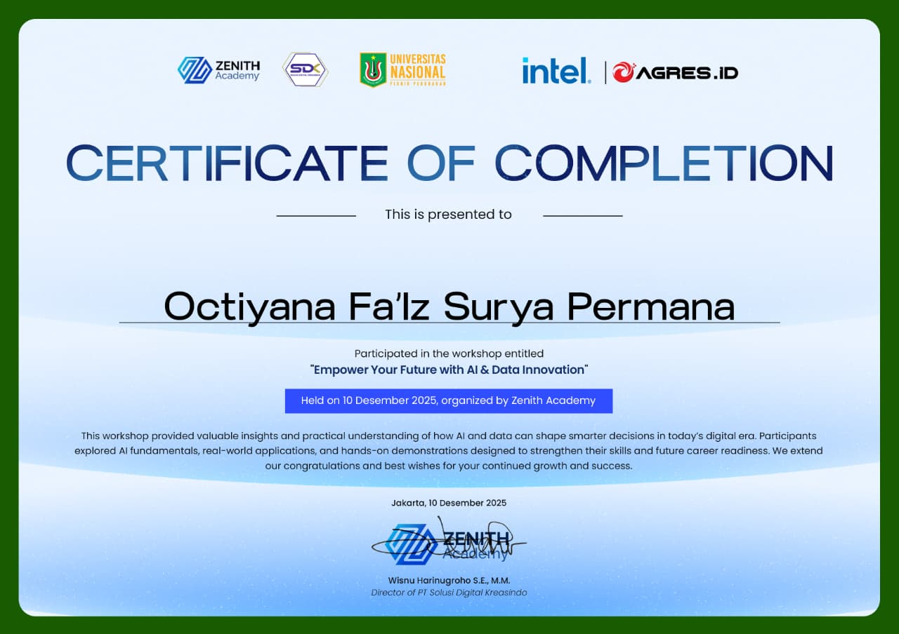
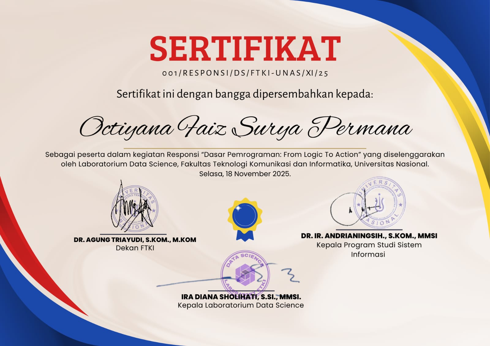

Mahasiswa Informatika · Pengembang web
Halo, saya Octiyana
Fa’iz Surya
Permana.
Mahasiswa Informatika Universitas Nasional yang berfokus pada Rekayasa Perangkat Lunak. Saya membangun aplikasi web yang berguna dengan PHP, Laravel, dan teknologi modern.
Lihat proyek pilihanMewujudkan ide menjadi sesuatu yang berguna.
Saya mahasiswa semester tiga Informatika di Universitas Nasional, dengan minat pada Rekayasa Perangkat Lunak. Saya senang merancang aplikasi yang memadukan antarmuka jelas dengan logika yang dapat diandalkan.
- Pendidikan
- Informatika
Universitas Nasional - Fokus
- Rekayasa Perangkat Lunak
Pengembangan aplikasi web - Prinsip
- Sederhana, berguna, dan terencana
Pengembangan diri
Belajar teknologi untuk masa depan.
Peserta lokakarya “Empower Your Future with AI & Data Innovation” yang diselenggarakan Zenith Academy, Desember 2025.


Dibuat untuk
keseharian.
Aplikasi yang menjawab kebutuhan nyata: melayani pesanan, mencatat pemasukan, dan mengatur aktivitas kuliah.
Sistem kasir dan pemesanan restoran
Tanah Kopi
Aplikasi web untuk mencatat pemasukan restoran serta memudahkan pelanggan memesan makanan dan minuman.
Aplikasi produktivitas pribadi
Schedule-Manager
Aplikasi yang saya buat untuk melihat dan mengubah jadwal semester, serta mencatat tugas kuliah dan tenggat waktunya agar tidak terlewat.
Teknologi yang
digunakan.
PHP / Laravel / Git / Vercel / Netlify